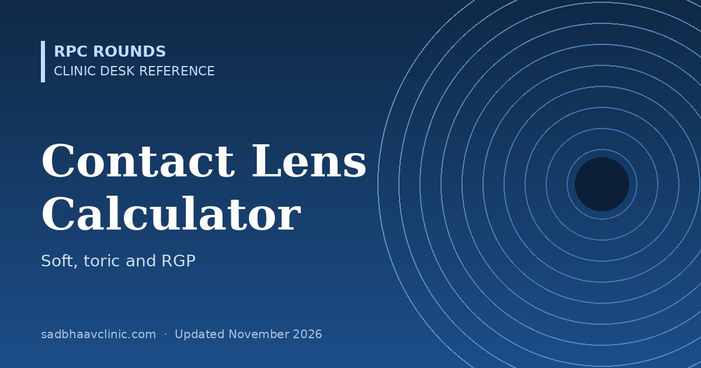

Last updated: November 2026
Convert a spectacle prescription into a first trial contact lens: soft spherical, soft toric or rigid gas-permeable (RGP). The calculator corrects for vertex distance, rounds to the steps lenses are made in, and for RGP lenses works out the base curve, tear lens and expected residual astigmatism.
Uses the spherical equivalent (sphere + half the cylinder), converted to the corneal plane. Powers above ±6.00 D are usually made in 0.50 D steps.
Each principal meridian is converted separately, then the result is rounded to typical stock steps: cylinder −0.75, −1.25, −1.75, −2.25 or −2.75 D, and axis in 10° steps. Check the manufacturer's range; many brands also offer 5° axes or custom cylinders.
Enter the cylinder in minus form. The base curve follows one common starting nomogram for a lens of about 9.0–9.6 mm diameter; manufacturers' fitting guides differ. Always confirm the fit with fluorescein and refine the power by over-refraction.
SAM-FAP: Steeper Add Minus, Flatter Add Plus. A base curve steeper than flat K creates a plus tear lens, so the lens needs that much extra minus power, and the reverse for a flatter fit.
r (mm) = 337.5 ÷ K (D), using the standard keratometric index of 1.3375. Change either box.
| Situation | Rule |
|---|---|
| When to vertex | Prescriptions of ±4.00 D or more. Minus lenses need less power at the cornea, plus lenses more. |
| Soft spherical or toric? | A spherical lens usually suffices if the cylinder is 0.75 D or less, or no more than a quarter of the sphere. Above that, try a toric lens. |
| Toric lens rotating | LARS: Left Add, Right Subtract. If the marking rotates to the observer's left (clockwise as you look at the patient), add the rotation to the axis; if to the right, subtract it. |
| RGP and corneal astigmatism | A spherical RGP lens corrects corneal astigmatism through the tear lens. Residual astigmatism is roughly the refractive cylinder minus the corneal cylinder (same axis assumed); above about 0.75 D consider a toric design. |
| Keratoconus | Fit by fluorescein pattern, not by K readings: use a trial set designed for cones, or scleral lenses. |
More detail: Contact lens quick reference, Vertex distance, Spectacle transposition tool, Contact lens care (patient guide).
📘 Want more exam-ready material? See Most Commons in Ophthalmology on Kindle, or browse all my books.
Looking for an eye specialist in Ahmedabad? Learn about our Eye Department or book a consultation with Dr. Dhaval Patel.